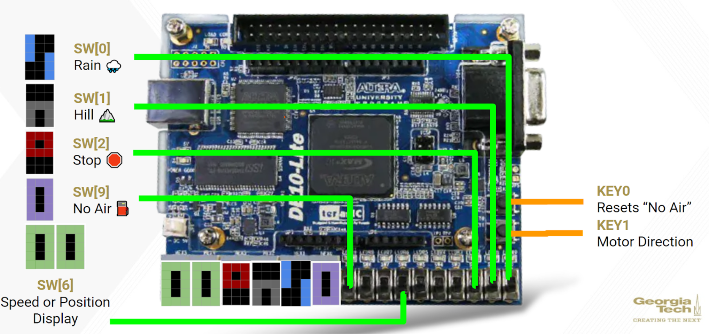
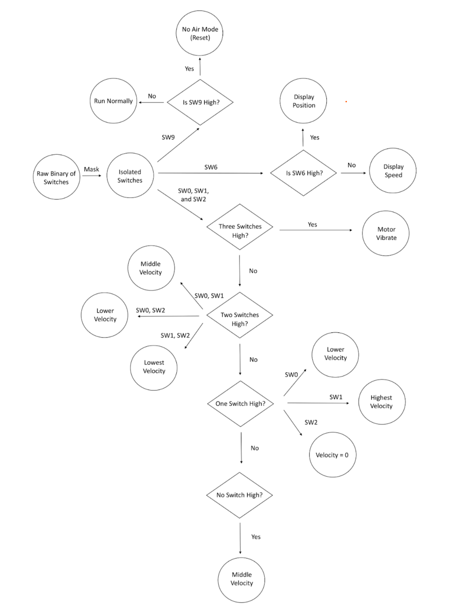

DE10-Lite FPGA Project
This project utilizes a DE10-Lite FPGA and a motor to create a system that simulates a safe electric bike ride. It is done so by creating an I/O peripheral for SCOMP that controls the motor direction of rotation, position, and speed.
The design includes two major peripherals, one to control and one to read from a motor. To control the motor, the user sends a 16-bit value to the peripheral at I/O address 0x021. Motor velocity is controlled by setting bit 15 high, wherein bits 0-7 determine the duty cycle of a PWM generator that controls motor speed. The motor direction is normally toggled by KEY1, but setting bit 14 high causes the motor direction to oscillate at 4Hz.
To control position, the user sets bit 15 low, wherein bits 0-11 control the position that the motor rotates towards. These 12 bits correspond to the number of encoder counts from the reset position, with a maximum range of 2 rotations over 1040 encoder counts. KEY0 sets the reset position. To read from the motor, the user reads the 16-bit value from I/O address 0x0F1. The device will return either motor velocity or position, depending on whether the user first sends binary 0 or 1 to the address, respectively.
Switches SW0, SW1, and SW2 combinatorially change the motor speed according to corresponding road conditions, and SW9 simulates a no air condition which causes the motor to move to its reset position. SW6 determines whether the motor speed or position is displayed on the 7-segment displays.
Figure 1. Switches, buttons, and 7-segment displays on the DE-10 Lite board that the user uses to interface with the device.
Figure 2. Flowchart showing how each switch affects the electric bike simulation. It shows the combinational logic to control motor velocity, and the modes to control position as well as to display speed or position.
To control motor speed, the device’s PWM counter runs at 100kHz over a range of 8 bits. This gives the motor a range of 25-74 rpms at a precision of 0.26 rpm. To counter motor stiction, whenever the motor fails to start rotating after not moving, the motor first runs at full speed for 1/4 second in order to start moving, at which point it transitions to its desired speed.
In earlier design iterations, the ability to control motor rotation was divided between two buttons. To avoid redundancy, we later changed the design such that a single button now toggles between rotation directions. This left us an extra button, which we used as the reset button.
The device measures motor position using a quadrature decoder state machine, which gives the maximum precision of 540 counts per rotation. The position reading is bounded between 2 rotations for ease of use, but the 12 bits allotted for position control allows the device to be changed to measure position over a maximum of 7 rotations.
Overall, this project successfully created an I/O peripheral for SCOMP that controls the motor’s speed and position with appropriate accuracy. Furthermore, the hex display displays symbols representing different modes. In retrospect, this deisng could be improved by adding more conditions into our simulation since there are more environment/road conditions that a biker would encounter in real life. Another improvement could be adding the velocity display incrementally increase or decrease to the desired velocity.